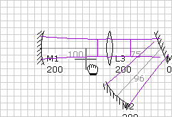

The Canvas is the main window in which a system layout is edited. Each opened system is shown in a Canvas window; closing the Canvas window also closes the file. For out-coupled systems, closing the Canvas window deletes the out-coupled system from the file.
The Canvas shows the optical system, with to-scale optic positions, angles, and sizes subject to the scaling properties listed below. The display includes an icon for each optic and the beam mode along the system.
| Property | Description |
| Zoom (%) | The overall magnification factor. The default value is 100%, which corresponds to 1 mm per pixel. |
| Mode Scale | The magnification factor for the displayed mode. For example, if the mode is 250 um and the Mode Scale is 20, then the mode is displayed as 250 um x 20 = 5 mm large. |
| Optics Size (mm) | The displayed diameter of the optics. |
| Grid Size (mm) | The spacing between adjacent grid lines. The grid lines are only displayed and movement is only constrained when the Snap to Grid box is checked. |
| Snap to Grid | When checked, displays the grid and constrains mouse dragging of optics to fall on the intersections of grid lines. |
| Separations | When checked, the separation between optics is displayed near the centreline. |
| Annotations | When checked, information about each optic is displayed adjacent to the optic icon. |
| Waists | When checked, waists in the beam are highlighted by a vertical line. |
The Canvas windows includes a number of editing tools, listed in the Canvas menu and as buttons on the toolbar.
In general, the Control key acts as a tool modifier.
For editing, the Selection tool is normally used. The Selection tool allows for single and multiple selections using the Shift key, as well as marquee selection by dragging across the Canvas. Selected optics can then be manipulated by dragging them at the centreline.
The Measure tool supports all of the functionality of the Selection tool. In addition, the Measure tool allows you to quickly examine the mode size at arbitrary points within the cavity.
The cavity mode size at the position marked is shown in the status bar at the bottom of the LaserCanvas window. The two numbers refer to the sagittal and tangential mode size, respectively.
The Zoom tool gives a convenient way to zoom in on a particular section of the cavity. The selection dragged in the Canvas is enlarged to fill the window.
To zoom out, hold down Shift and click in the Canvas. Alternatively, enter the desired magnification level in the Zoom field in the Property Manager.
With the Pan tool selected, clicking and dragging the Canvas scrolls the visible portions of the system in the window. The coordinates of the optics in the system remain unchanged.
|  |
The Rotate tool allows you to rotate the entire system. Unlike the Pan tool, the Rotate tool changes the system directly by modifying the Rotation, Start X, and Start Y properties.
The system is rotated about the centre of the window, indicated by the cross-hairs. If you wish to move the rotation axis, use the Pan tool to position the system under the cross-hairs as desired, then Rotate the system.